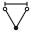

vwf — logo
DIRECTION 2A · BLUEPRINT
vwf
vwf
Primary · blueprint on paper
vwf
Reversed · on ink or blueprint

vwf
Mono · one-colour print
44
merge
start
Construction · 64 grid, 2.2 stroke, r 3.4 nodes. Two open starts resolve to one filled merge.
Small sizes · below 32px the mark drops the dimension ticks and open nodes. App icon on blueprint tile.
#1E3F8F
#15161A
#F4F5F8
#FFFFFF
Blueprint · Ink · Paper · Line
vwf
Geist Mono 300, tracking +2%
Schibsted Grotesk for UI copy
Type · wordmark is always lowercase